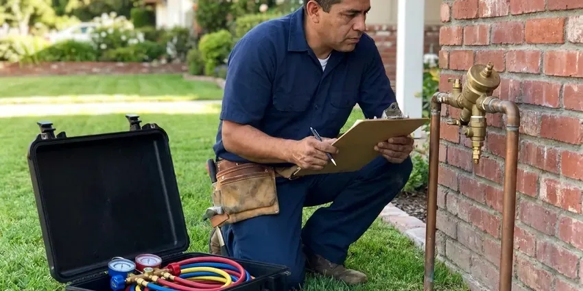

Rooter Services in Devils Lake, ND
Rooter service in Devils Lake, ND from technicians who read the cable and know when a pipe is in trouble, so older lines come through intact.
- Same-Day Rooter Service
- Camera Checks on Request
- Same-Day Drain Clearing
- Cable Sized to Your Pipe

Drains Backing Up Again? Call Our Rooter Crew in Devils Lake, ND.
We clear the line fully and let you see what came back on the cable, so you know what caused it.
Rooter Work for Devils Lake, ND Homes and Businesses
HPN Plumbing roots lots of older homes in Devils Lake, ND. Frost heave can shift soil around sewer lines and crack joints, which often shows up as slow drains or backups. Ground movement loosens joints, and that is where roots and sediment get in. We cut roots and grease back to the pipe wall so the line stays open for months, not just a week or two.
Our expertise includes:
- High-Pressure Jetting Service
- Main line clearing for homes and commercial buildings
- Drum and sectional augers for 1.5 to 6 inch pipe

Additional Plumbing Maintenance Services in Devils Lake, ND
Our maintenance and specialty plumbing services in Devils Lake, ND catch small problems before they become emergencies.


Customers
Why Choose HPN Plumbing for Rooter Services in Devils Lake, ND?
We pull the cable back and look at what is wrapped on the head. Root fibers point to an open joint. Grease and wipes point to what is going down the drain, and that part of the fix is in your hands, not ours.
- Nights and Weekends, Sewers back up at bad hours. HPN Plumbing takes evening and weekend rooter calls.
- Price Up Front, You get the price before the cable goes in the drain, not after.
- Local Experience, HPN Plumbing techs work on Devils Lake sewers every day and know which older streets tend to have root-prone clay sewer lines.
Citywide Coverage
We root lines in every Devils Lake neighborhood, including older areas with clay laterals and newer subdivisions with PVC. Clay lines get a lighter touch. Our trucks carry cable lengths long enough to reach the city tap from most cleanouts, and we bring a camera when the line is unfamiliar.
Experienced Team
Each technician learns to read cable feedback. If the cable jerks hard or will not advance, it may mean broken pipe, so they stop before it gets worse. Fragile clay lines benefit most.
Safety-First Approach
Plumbing code governs every rooter job we do, including how cleanouts and traps get reassembled. Sewer gas leaks in through a loose cap. Every joint we disturb gets a water test and a smell check before we pack up.
Trusted Certified Devils Lake Plumbing Services Professionals
At HPN Plumbing, we take pride in licensed, certified plumbing services throughout Devils Lake, ND. Those papers on the wall mean something. Our plumbers hold recognized industry credentials, and they follow strict safety and quality rules on every repair, installation and maintenance call we run.
Call Us Now PHCC Plumbing Contractor Recognition
PHCC Plumbing Contractor Recognition Better Business Bureau (BBB) Accreditation
Better Business Bureau (BBB) Accreditation Angi Certified Pro
Angi Certified Pro ISO 9001 Quality Management Certification
ISO 9001 Quality Management CertificationHeavy-Duty Rooter Services in Devils Lake, ND
Clog Prevention & Maintenance in Devils Lake, ND
Grease belongs in a can, not the sink. Even wipes labeled flushable hold together long enough to snag in a sewer. HPN Plumbing can recommend strainers, a cleanout where one is missing, and a rooting schedule for your Devils Lake, ND home based on what we pulled out last time. Small habits make a big difference.

Kitchen Line Rooter Service in Devils Lake, ND
Kitchen lines clog slowly, over months, with grease, soap and food scraps that cool and harden on the pipe wall. We go in through the trap or a cleanout with a medium cable and spiral cutter. Thick grease calls for a follow-up jet. The jet washes the walls clean, which keeps the line open much longer than the cable alone.
Hydro-Jetting Services in Devils Lake, ND
Jetting puts water through a nozzle at 3,000 to 4,000 psi and scrubs the pipe wall clean. It strips grease, scale and root hair that a cable slides past. Many rural homes get water from private wells or rural water systems, and iron and sulfur odors are common complaints. The pipe gets a camera check first. Cracked clay or thin cast iron can be hurt by that pressure, so we only jet a line we have seen and trust.
Commercial Rooter Service in Devils Lake
Restaurants, apartment buildings, schools and offices load their drains all day. Big mains, kitchen waste lines and floor drains get commercial machines and heavier cable. Maintenance plans cut emergency calls. After-hours work keeps the noise away from tenants and customers.
Video Camera Drain Inspection in Devils Lake
A camera on a push rod shows the inside of the pipe in real time. For a line that keeps plugging, it ends the guesswork fast. We can see roots at a joint, a dropped toy, a cracked hub or a belly where water sits and drops its solids. You can watch the screen alongside the tech.
Main Line Rooter Service Through Cleanouts in Devils Lake, ND
A cleanout is a capped pipe that gives us a straight shot into the main. We run cable from there to the city connection so the entire line gets cut, not just the first few feet. We can add a cleanout if there is none. Running water afterward shows us the line is flowing at full rate.
Tree Root Removal in Devils Lake
Hair-fine roots slip into a sewer joint and swell into a mat that catches paper and grease. Older Devils Lake streets with big shade trees see this the most. We run a root saw head that cuts the mass back to the pipe wall, not just a channel through the middle. Roots grow back. Lining or replacing the bad section is the permanent fix, and we will tell you if your line is a candidate.

Emergency Rooter Services in Devils Lake, ND
Sewage in a floor drain on a Saturday night does not wait for Monday. HPN Plumbing takes emergency rooter calls in Devils Lake, ND and sends a truck loaded with cable, cutters and a jetter. Most backups clear on that first visit. We also help you keep the mess contained and point you to cleanup crews if sewage reached carpet or drywall.
Rooter Service Near Me in Devils Lake, ND
Close by matters most when sewage is coming up a floor drain. HPN Plumbing serves Devils Lake, ND and the surrounding towns with rooter crews who know local sewer layouts. You are not waiting half a day. We also know where the city connection usually sits on these lots, which helps us run cable the full distance without guessing.
Local technicians know which Devils Lake streets have older clay sewers under heavy tree cover, and which newer tracts were plumbed in PVC. That knowledge lets us bring the right cutter the first time. Setting up regular rooting takes one call.
HPN Plumbing at a Glance
- Licensed and insured plumbers serving Devils Lake, ND
- 24/7 emergency service with same-day scheduling
- Clear written estimates, no hidden fees
- 4.9-star rated by 408+ North Dakota customers
Devils Lake Map
Devils Lake Information
- Population
- 7,135
- Area codes
- Local
- Service area
- Devils Lake and towns within a 40 mile drive
- Nearby
- Grand Forks, Jamestown, Valley City, Minot
A mature shade tree can send hair-fine roots through a joint gap and fill a 4 inch sewer in a couple of seasons, which is why regular rooting keeps Devils Lake drains moving.
Expert Services
Call HPN Plumbing for reliable plumbing work done by licensed pros in Devils Lake, ND.
Our Specialized Plumbing Services in Devils Lake, ND
At HPN Plumbing, we handle the full list of plumbing services across Devils Lake, ND. From leak detection to full system installs, our team works fast and charges fair prices on homes and commercial properties alike. Take a look at our core services below:


How a Rooter Call Works in Devils Lake, ND
From your first call to the flow test, here is how HPN Plumbing handles rooter service in Devils Lake, ND.
Call and Describe It
Call HPN Plumbing at (701) 403-1348 and tell us which drains are slow and whether water is backing up. We set a time for a tech to come to your Devils Lake property.
Find the Clog
The tech checks the fixtures, finds the cleanout and, if needed, runs a camera. You get a firm price before work starts.
Root the Line
We run the cable and cutter sized to the pipe, or jet it when grease calls for it, then run water to check the line before finishing.
Frequently Asked Questions About Rooter Services in Devils Lake
Rooting a sink, tub or toilet usually costs $125 to $300. Main sewer rooting through a cleanout usually runs $200 to $500. Adding a jetting pass brings the total to about $450 to $1,000, depending on line length and how much grease is in it. After-hours calls cost more.
Our trucks carry Spartan and RIDGID machines, plus jetters sized for residential and commercial lines. They hold up well to heavy daily use. We keep cables and cutter heads in several sizes on board, which lets the tech match the tool to your pipe instead of forcing one setup on every drain.
Yes. We take evening, weekend and holiday rooter calls for urgent clogs and backups. After-hours rates are explained before work begins.
We run RIDGID, Spartan and Gorlitz augers, plus sewer cameras and jetters from the same tier of commercial makers. These machines take daily abuse and keep working. Brand matters less than setup. Even a top machine can hurt a pipe with the wrong head, so picking the cutter gets as much attention as the machine.
No permit is required for routine rooting. A new cleanout or a pipe repair may need one. We pull permits for any repair work we do.
Watch for very slow drains, gurgling from toilets and sour odors. Water rising in a tub or shower when another fixture drains is a strong sign of a main line clog. That one is urgent. Waiting raises the odds that the next flush puts sewage on the floor.
Clearing a clog in Devils Lake does not need a permit. Repair work is different. A new cleanout, a dig to fix broken pipe or a sewer replacement usually needs a plumbing permit. We pull it and schedule the inspection for you.
Most single-drain clogs take 1 to 3 hours from arrival to flow test. Main lines with heavy roots, or jobs that need a jetting pass, can stretch to half a day or more. Access makes the biggest difference. With no usable cleanout, we pull a toilet to get in, and that adds about an hour.
Hear From Customers Who Hired Our Plumbing Experts

Diane F.
My kitchen faucet had dripped for months and I finally got tired of hearing it at night. HPN Plumbing came out the next morning, replaced the cartridge and the O rings, and tightened a loose base that was letting water under the sink.
Faucet Repair · Bismarck, NDKaren W.
After our third pinhole leak in copper, we stopped patching. HPN Plumbing gave us a written plan room by room and repiped the house in PEX while we stayed in it. The crew covered our floors every morning and cleaned up every night.
Repiping · Minot, ND
Sofia M.
Two new toilets went in during one visit. The tech set them on new wax rings and swapped the old supply lines. He also noticed our bathroom faucet dripping and replaced the cartridge while he was there. No mess left behind.
Toilet Installation · Minot AFB, ND
Daniel K.
A pipe burst in the garage ceiling at 11 at night. Someone answered on the second ring, and the plumber was in my driveway about fifty minutes later. He shut off the main, cut out the split section, and had water back on before 2 am.
Emergency Plumbing · Minot, ND
Robert G.
The camera showed a full break in our clay sewer line near the street. HPN Plumbing replaced it with a trenchless pipe burst, so the only digging was two small pits in the yard. They let us watch the footage before and after.
Sewer Line Replacement · Minot AFB, ND
Rachel N.
Hard water was leaving white crust on every faucet and our dishwasher was struggling. The tech tested the water, recommended a softener sized for a family of five, and installed it with a bypass valve in one afternoon. The spots on our glasses are gone.
Water Softener · Minot, ND